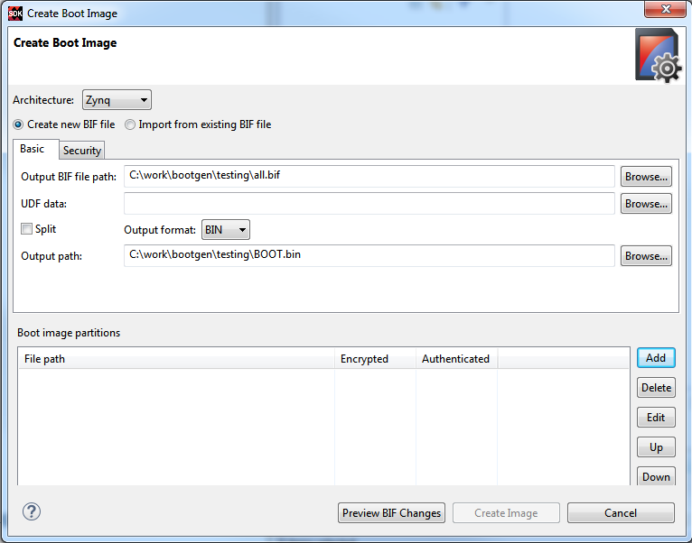

Opening the Create Boot Image Dialog Box
- Ensure that the FSBL project and C application project are created in the SDK workspace and built so that corresponding ELF files are available. Note: For more information, refer to Creating a New Zynq FSBL Application Project and Creating a Standalone Application Project.
- Select the application project in the Project Navigator or C/C++
Projects view and right-click Create Boot Image. Alternately,
click Xilinx Tools > Create Boot Image. The Create Zynq-7000
AP SoC Boot Image dialog box appears with default values preselected
from the context of the selected C project. Note the following:
- When you run Create Boot Image the first time for an application, the dialog box is pre-populated with paths to the selected project ELF file, the FSBL ELF file, and the bitstream for the selected hardware (if it exists in hardware project).
- If a boot image has previously run for the application, the dialog box is pre-populated with previously used values as per the configuration file present in the project that is in the bif folder.
- You can now create boot image for Zynq® and Zynq® UltraScale+™ MPSoC architectures.
- You can add new partitions to the boot image by clicking Add and specifying the location of the required data files, if any.
- You can now add some information, like version/other info to the boot image. This data will be a part of the Boot header.
- The specified data should be a maximum of 76 bytes (for Zynq) and 40 bytes (Zynq UltraScale+ MPSoC).
- The specified data will take an offset of 0x4c (for Zynq) and 0x70 (for Zynq UltraScale+ MPSoC) in the bootimage.
- Specify offset, alignment, and allocation values for partitions in the boot image, if applicable.
- The output file path is set to the bif folder under the selected application
project by default.
